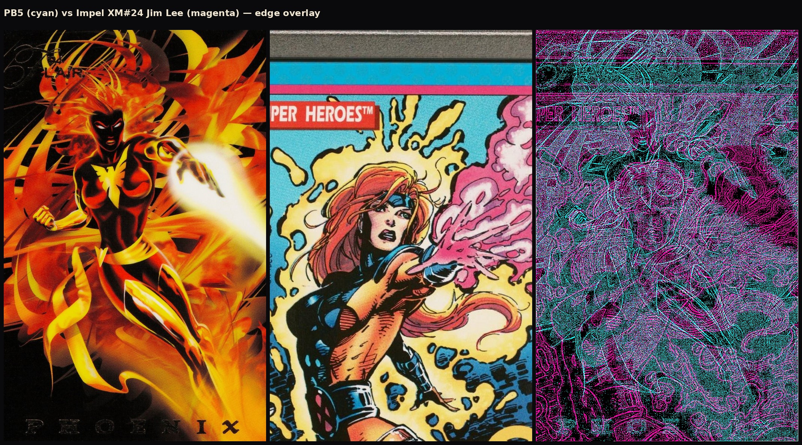
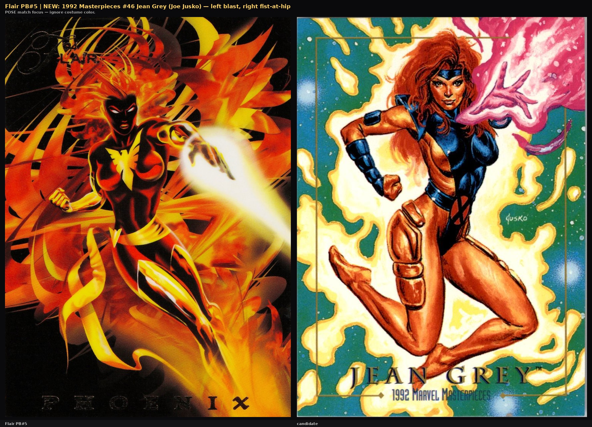

← Phoenix source hunt · Matching board
Fleer PB5 source hunt — after Admahum closed
Status: No pre–June 1994 print parent found for Powerblast #5. Card-HD reverse image only recovers Flair / FlairPrints. Hobby threads name recycled sources for other Powerblasts but leave Phoenix blank — some even guess Flair-original CGI. SOURCE_ART.pb05 stays empty.
What we closed
- Admahum / “signed find” — 2006 fan painting of the card.
- Adam Hughes / CAF Klamer AH / gangus Angus — wrong art or wrong era.
Collector consensus (Phoenix exception)
Blowout Forums (~2022-01-05), thread “Marvel Cards are going crazy,” post 17898742:
- DynaEtch: “Like what would that Phoenix be from? I almost have to think a lot of the aspects of that image are original to the flair power blast.”
- fabiani12333: “All the 94 powerblast cards have recycled artwork…” — then names Wolverine (Texeira), Spidey (McFarlane), Punisher (JRJr), Storm (’92 MU), Deadpool (Madureira ’93 poster), Cap (Jim Lee splash). Does not name Phoenix.
Reddit set review phrasing matches: Powerblasts “except possibly Phoenix” taken from existing art. Full quotes: blowout-phoenix-quotes.txt.
Documented recycled PB sources (context)
| PB # | Character | Claimed parent |
|---|
| 6 | Storm | 1992 Marvel Universe Storm card |
| 8 | Wolverine | Mark Texeira — Wolverine #67 cover |
| 10 | Punisher | John Romita Jr. |
| 11 | Captain America | Jim Lee splash |
| 15 | Spider-Man | Todd McFarlane |
| 16 | Deadpool | 1993 Madureira poster |
| 5 | Phoenix | — unnamed — |
Card-HD reverse image
SauceNAO / Yandex / IQDB on powerblast-fx/hd/05.jpg: Flair family only (card, FlairPrints, scrapes). No pre-CGI comic or pin-up. Admahum correctly absent (his JPEG ≠ the card plate).
Strong cousins — not proven traces

Edge overlay vs 1992 Impel X-Men #24 (Jim Lee) — body-plan cousin; wrong suit; right hand not clenched at hip; no published Fleer-trace claim.

vs 1992 Masterpieces #46 (Jusko) — painted Lee-suit cousin; fist higher; different medium. No trace claim.
Best remaining leads
- @exotechktx Instagram Flair source album — Reddit: IDed every card’s source with 4 still missing; confirm whether PB Phoenix is among them.
- Ask Blowout posters who claimed “all recycled” for the Phoenix parent specifically.
- Residential TinEye / Lens on foil-stripped card crop (bot-walled here).
- Soft census UNKNOWNs: OHOTMU Deluxe #9 Phoenix figure; Master Edition Dark Phoenix board; BA #27 Cockrum data-log interior; period Byrne/Cockrum CAF sketches.
- Fleer alumni / 1994 packaging / Wizard ads for the unnamed CGI studio.
Full write-up: REPORT.md
Research · 2026-10-22 · do not install SOURCE_ART.pb05 without a verified pre-1994 parent.